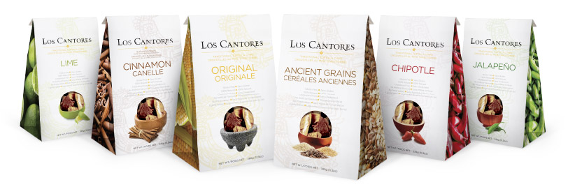

Original
Made from an authentic family recipe passed down through generations, our Original flavour combines the taste of our uniquely prepared corn, accented with unique spices and zesty seasonings that let the full flavour shine through. This is a true taste of Mexico.
Ancient Grains
It’s quite possible that farmers in the early Incas and Aztec communities may have grown grains like quinoa, amaranth and spelt. These chips honour that aspect of Mexico’s history while offering the nutty grain tastes Canadians are rediscovering today.
Jalapeño
Like it hot, hot, hot? This chip is loaded with the fiery taste of real jalapeño peppers plus our authentic Mexican spices and seasonings for full-on flavour.
Chipotle
Prefer a smokier, sweeter, subtle heat? The rich, spicy sweet and almost creamy favour of chipotle comes from smoked and dried jalapeño peppers, and marries perfectly with our authentic corn taste.
Cinnamon
In homage to traditional Mexican Beñuelos, a sugar-dusted holiday treat, these crisp, crunchy sweet cinnamon chips are perfect for dipping in ice cream or enjoying with nice hot drink. Indulge yourself!
Lime
Almost every authentic Mexican dish includes a generous splash of fresh lime juice—and these chips are no exception. They’re light tasting, refreshing and pair perfectly with hotter, spicier salsas and sauces.